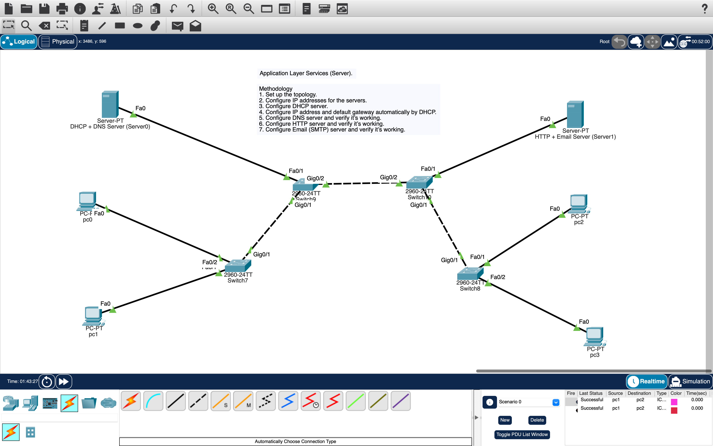

DHCP · DNS · HTTP · Email (SMTP/POP3) · Full User Experience

Full configuration: DHCP pool, DNS records, HTTP webpage, Email users (user1/user2)
Imagine you are sitting at PC1 in the computer lab. You don’t need to know anything about IP addresses, subnet masks, or server configurations. The moment you turn on your computer, the DHCP server (192.168.100.10) automatically gives your PC an IP address like 192.168.100.51. You see the network icon show "Connected" — no manual setup required.
To browse the internal website, you open your web browser, type www.puc.com in the address bar, and press Enter. Behind the scenes, the DNS server translates that friendly name into the actual IP address 192.168.100.20 (HTTP server). Instantly, a welcome page appears: "Welcome to PUC Network – Application Layer Services Lab". You can click, refresh, or even navigate to test.html — it feels exactly like browsing the real internet, but everything stays inside your local network.
Now for email: You open the Email client on your desktop. You click Compose, type user2@puc.com in the "To" field, write a quick message like "Hello from PC1!", and hit Send. Your friend at PC2 opens their email client, clicks Receive, and sees your message instantly. They can reply, and when you click Receive again, you get their reply. No complicated settings — just like Gmail or Outlook. The SMTP and POP3 services on the same server handle the delivery. This lab perfectly mirrors how real-world networks provide DHCP, DNS, web, and email services, making everything seamless for the end user.
✨ Key takeaway: Users only care about typing a web address or sending an email — all the magic of application-layer protocols happens automatically thanks to correct server configurations.
Configure DHCP + DNS Server (Server0):
Configure HTTP + Email Server (Server1):
192.168.100.1192.168.100.10192.168.100.50255.255.255.010 → Click Save.On each PC (PC0, PC1, PC2, PC3):
www.puc.com → Address: 192.168.100.20 → Click Add/Save.mail.puc.com → 192.168.100.20 for email convenience.test.html → HTML content:index.html if desired.http://192.168.100.20/test.html or http://www.puc.com/test.html → webpage displays.password123 → click +.password123 → click +.puc.com → Save.PC1 (user1): Desktop → Email → Configure Mail:
PC2 (user2): Desktop → Email → Configure Mail:
| Service | User Action | Expected Outcome | Status |
|---|---|---|---|
| DHCP | Turn on PC → ipconfig | IP 192.168.100.50–.53, gateway .1 | ✓ Success |
| DNS | nslookup www.puc.com | Returns 192.168.100.20 | ✓ Success |
| HTTP | Browser → http://www.puc.com/test.html | Webpage displays welcome message | ✓ Success |
| SMTP (Send) | PC1 sends email to user2@puc.com | "Message sent" confirmation | ✓ Success |
| POP3 (Receive) | PC2 clicks Receive | Email from user1 appears | ✓ Success |
| Full Email Loop | PC2 replies → PC1 Receive | Two-way communication works | ✓ Success |